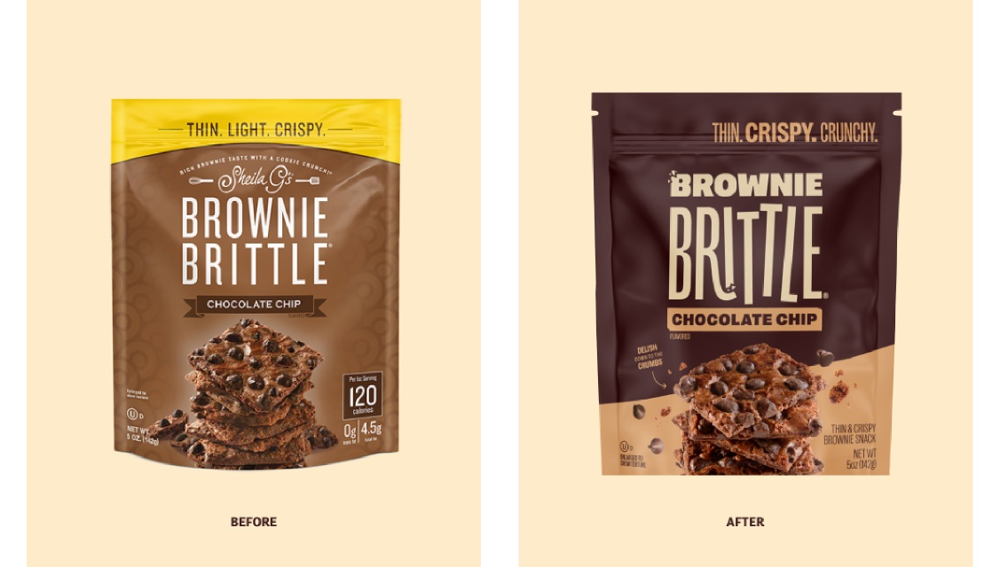
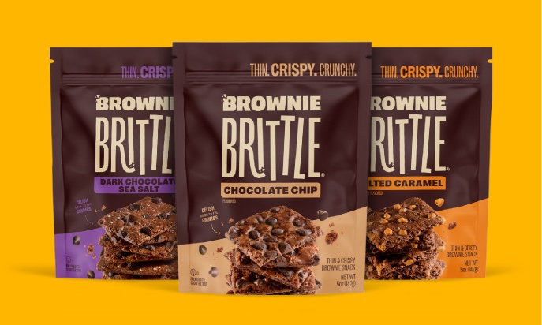
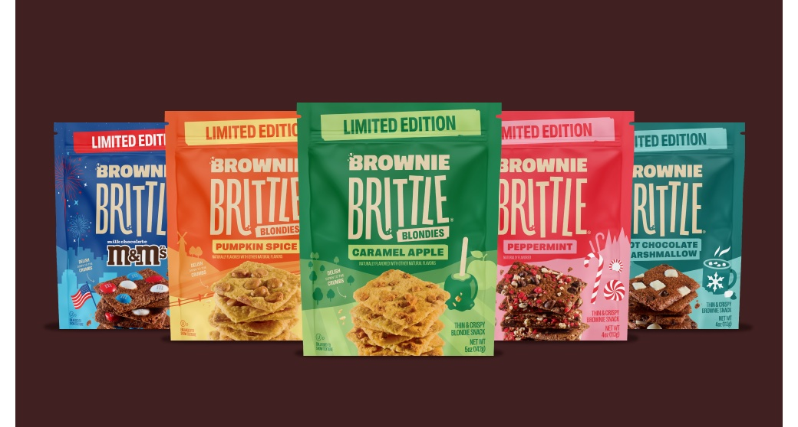
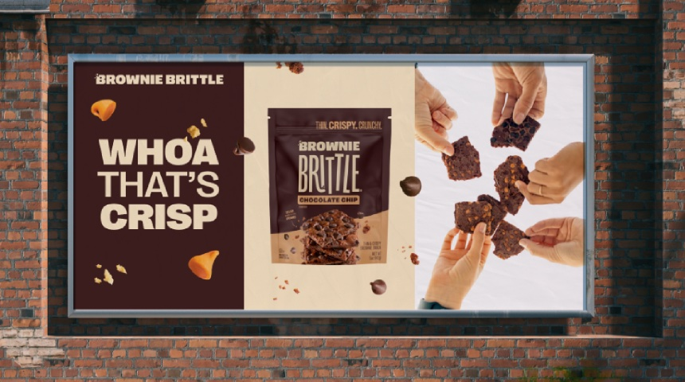
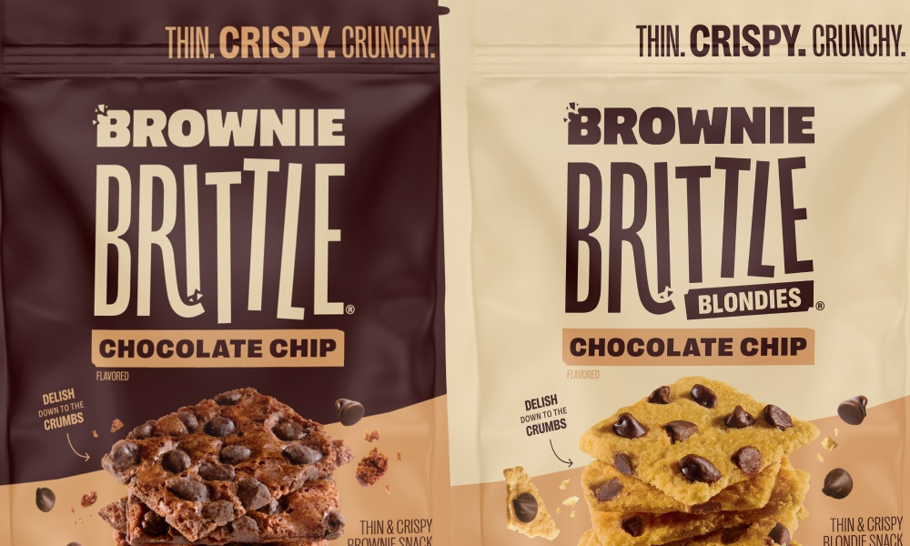

Brownie Brittle

The Problem
Brownie Brittle had a loyal following and a product people genuinely loved— a thin, crispy, indulgent, and distinct snack in an aisle full of sameness.
The visual identity and messaging weren't connecting with the younger consumers the brand needed to grow.
The Rundown
- Creative direction
- Competitive audit
- Brand strategy and positioning
- Audience identification
- Voice and messaging
- Packaging architecture
- Packaging copywriting
- Product photoshoot direction
The Thinking
The name describes the product, but it doesn't sell the experience. Brownie Brittle is a singular thing in the snack aisle — not a chip, not a cookie, not a health play — and the brand language needed to close that gap in as few words as possible. We needed an evocative shorthand. Something that would get someone to understand what this is, what it feels like to eat it, and why they want it, all before they flip the bag over. After rigorous qualitative and quantitative testing, "Thin. Crispy. Crunchy" was shown to evoke the curiosity and cravability in new and existing consumers.
The Work
Brand Positioning
The category defaults to either health-claim earnestness or generic indulgence copy. We went somewhere else entirely. "Delish Down to the Crumbs" has personality and specificity — it sounds like someone who's actually eaten the thing, not a copywriter filling a template.

Messaging Direction
The updated packaging architecture communicates product differentiators, the distinctive brand name, and flavor visually and verbally on the pack. The product line spans Brownie Brittle, Blondies, and seasonal SKUs — different enough to need their own space, similar enough to fall apart without a shared foundation.

Packaging Architecture
The system had to work for a chocolate chip bag and a seasonal pumpkin spice bag without anyone rethinking the structure. Scalability was designed in, not bolted on.

Product Photography
The old photography was informational. The new direction was sensory — close-up texture, visible crunch, the kind of shot that makes you reach for the bag before you've read a single word. We focused on the sharp corners and square shape to differentiate in an aisle dominated by circles.

The Result